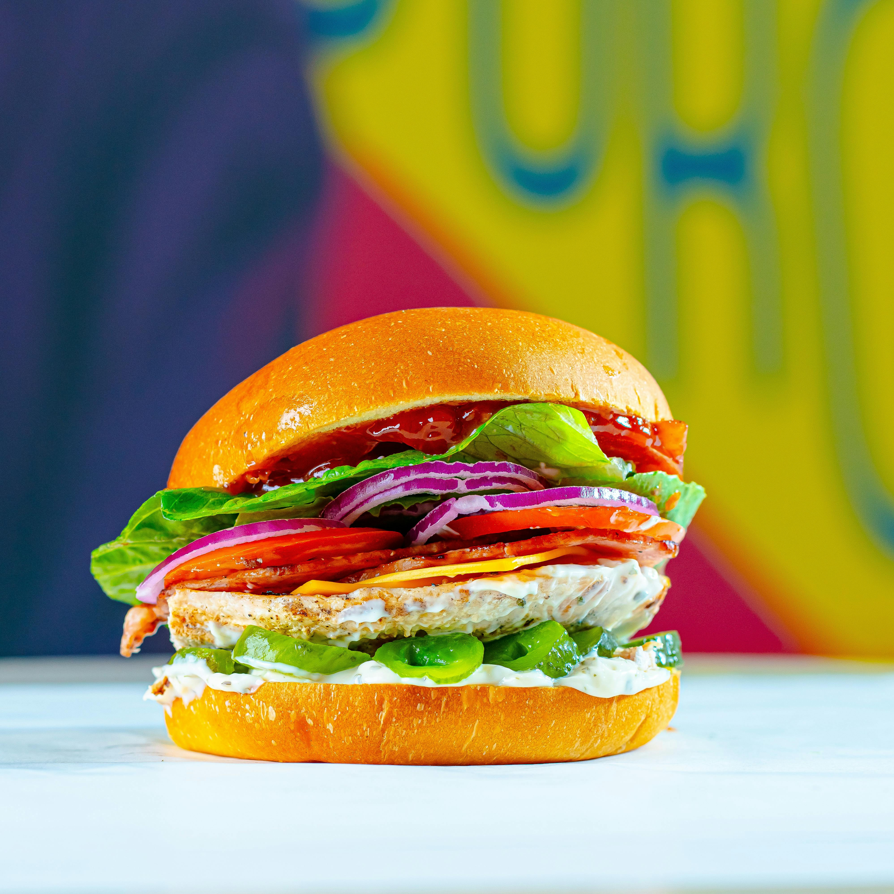

Grilled Chicken Sandwich
A clean, ultra-lean, high-protein cutting meal with great flavor and fast digestion.
Ingredients
- 6–8 oz chicken breast (thin-sliced)
- 2 slices low-fat bread or sourdough
- 1 tsp salt
- 1/2 tsp garlic powder
- 1/2 tsp paprika
- Black pepper to taste
- Homemade Honey Mustard Sauce: 1 tsp honey + 1 tsp mustard + 1 tsp water
Instructions
- Season the chicken with salt, garlic powder, paprika, and pepper.
- Cook the chicken in a non-stick pan on medium heat until golden and fully cooked through.
- Lightly toast both slices of bread.
- Mix the honey, mustard, and water in a small bowl to create the sauce.
- Assemble the sandwich: bottom bread → chicken → drizzle of honey mustard → top bread.
- Press lightly and serve warm.
Macros (Approx.)
• Protein: ~50g
• Carbs: ~38–42g
• Fat: ~3–5g
• Calories: ~390–430